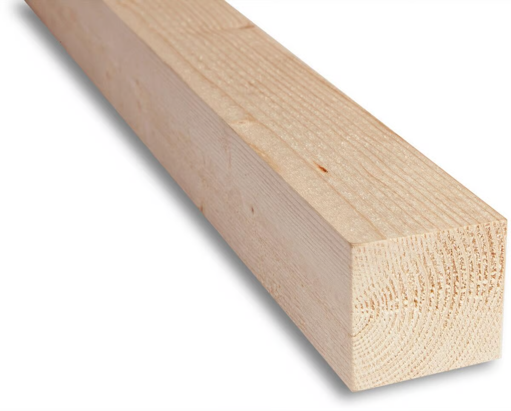
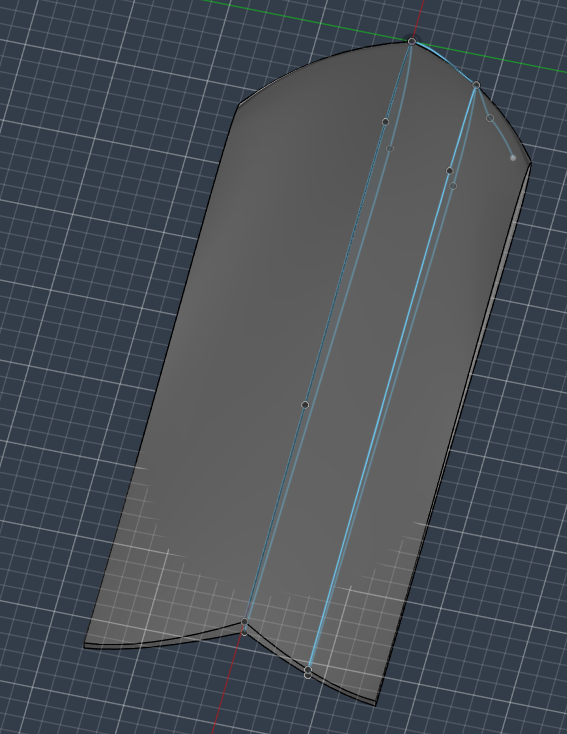
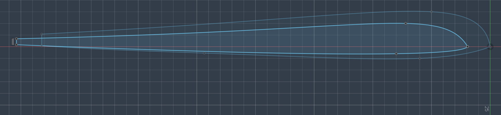

Build Log · Woodworking / Composites
Material: 48×48 Pine · Method: Strip lamination + hand shaping · Finish: Stained
Timber was sourced from Nelsons Trelast. 48 × 48 pine was selected for its cost-effectiveness and suitable grain structure — straight, tight grain with good workability under hand and machine tools.
| Property | Detail |
|---|---|
| Material | Pine (softwood) |
| Stock dimensions | 48 mm × 48 mm |
| Supplier | Nelsons Trelast |
| Selection criteria | Grain structure, machinability, cost |

Raw 48×48 pine stock prior to processing
The surfboard geometry was modelled in CAD prior to any cutting. This provided accurate cross-sectional profiles at multiple points along the board's length, which were used as templates for material removal during shaping.
The CAD model informed the required strip dimensions, rocker profile, and rail geometry at each station.

Cross-section profiles from CAD model

Full board plan/profile drawing
Pine was cut into strips matching the required cross-sections derived from the CAD model. Strips were then glued and clamped together to form a laminated blank — the structural core of the board.
This strip lamination method is standard practice for wooden surfboard construction, producing a blank that approximates the final form before shaping begins.
Laminated blank after glue-up, prior to shaping
The laminated blank was shaped using hand planes, working down from the rectangular cross-section to the final board profile. The CAD cross-sections served as reference templates throughout.
Following rough shaping with the plane, the surface was sanded to remove tool marks and the rails were rounded to the specified profile. Sanding also exposed the pine grain across the full surface.
| Operation | Tool / Process |
|---|---|
| Rough shaping | Hand plane |
| Surface finishing | Sandpaper (progressive grits) |
| Rail shaping | Hand plane + sanding |
| Reference | CAD cross-section templates |
Board after planing, sanding, and rail rounding
The shaped and sanded blank was stained to enhance the grain definition and provide a base finish. The stain penetrated the wood evenly, highlighting the lamination lines and natural grain pattern across the surface.
Applying stain onto the board
Thereafter a stand was made out of shaped round pine. This was purchased from Biltema, often used as broom handles.
The stand
The completed board achieved the intended geometry as defined in the CAD model. The strip lamination technique produced a structurally sound blank, and hand shaping allowed precise control of the final profile and rail geometry.
Completed wooden surfboard